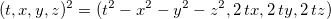

Professional sketch of Doug Sweetser
Education
MIT, 1980-1984 SB: Biology SB: Chemical Engineering GPA: 4.0 (I should point out MIT is on a 5.0, so 4.0 sounds great)
MCD Biology - University of Colorado Boulder, 1987-1989 Ph.D. Program Left on own accord.
Math Department - University of Indiana, Bloomington, 1990 Graduate level courses Left on own accord.
Brandeis, 2000-2002 MS: Computer Software Engineering
Work Experience
Biology
My first job was as a lab tech at the newly opened Whitehead Institute for
Biomedical Research. On the first week on the job, Prof. Rick Young showed me
how to clone the first genes ever from the Mycobacteria that causes leprosy.
The work was featured on a NOVA documentary. Twelve technical papers were
written in a three year paper in the most important journals in biology,
including Nature, Cell, and the Proceedings of the National Academy of Sciences
(PNAS).
Worked as a lab tech for Jac Nickoloff at the Harvard School of Public Health (8 years). My heart was elsewhere (which caused problems on the job).
Computers
The first Internet Service Provider (ISP) was started in Brookline, MA in 1989. They were my first ISP. After leaving the biology business, I worked the phones in a support role. I also helped maintain the billing software written in Perl. The shifting landscape of ISPs lead then to downsize in 2003.
I was the 9th employee of Black Duck Software. They initially wanted to help companies understand the licensing requirements behind open source software. I was hired as a "spider", crawling the Internet and harvesting open source software for our knowledgebase.
Physics
Initial interest
In the Christmas of 1988, both my mother and sister independently bought the book: "A Brief History of Time" by Stephen Hawking. I view that as my "born again" moment, one based on physics, not the Bible. For a month long period, my mind kept rearranging information, sure that everything somehow made sense. I was aware I was babbling - saying words that are part of the lexicon of physics, but would not make sense to an actual physicist. I decide to keep a day job, but work study physics in the background.
Boston was the perfect city in the 1990s to study physics on the side. I took a
Harvard Extension class on Special Relativity taught by Edwin F. Taylor as he
was writing the book "Spacetime Physics" with Johnathon Wheeler. Taylor would
bring in a new chapter from Copy Copy, and we were assigned to critique it.
Thus became my respectful skeptical analysis of physics. I decide to keep a day
job, but work study physics in the background.
I was able to show some of my earliest efforts to a famous physicist who worked at MIT. He said it was "interesting, but not very interesting". The reason was I did not have a theory, a means to make many calculations. At the time, all I had were a few math widgets.
First work on quaternions
In the struggle to find a theory, I held a small contest on a moderated newsgroup, sci.physics.research in 1997. I asked readers to provide a brief definition of time. It had to be about math or physics, not philosophy, and needed to be two sentences or less. In one math book, I recalled some odd sort of number that was like a scalar and a vector. The contest motivated me to reread that passage, then go to an old-fashion library and read up about quaternions. This was the first equation I saw, the squaring of a quaternion:

To this day, this makes me excited because the first term is at the core of
special relativity as taught to me by Edwin F. Taylor. It is there, for free.
That cannot be an accident. That observation drove me to purchase the domain
quaternions.com.
Major failure at a unified field theory
I struggled to come up with a way to deal with gravity using only quaternions.
One lesson from general relativity is that a theory of gravity must be a metric
theory - a theory where the calculation of distance depends on where one
happens to be in a gravitational field. Measuring distance is a symmetric
operation, meaning there is no handed to doing the work. Quaternions do have a
handedness. There is no way around that. So I reinvented hypercomplex numbers.
Those have all the same multiplication rules as quaternions, but no minus signs
anywhere. As such, hypercomplex numbers could be used to characterize a metric.
I confess to having pride in the proposal, enough to print up t-shirts. It was difficult to find a professional to review the body of work. I began blogging on Science20.com. There I found a few technically skilled readers. When I finally got to presenting what I called the GEM proposal, several readers objected to the work. It took a little over a month for me to really see the proposal like they did. The flaw was deadly. A Lagrangian constructed from quaternions will not change under a rotation. It will therefore conserve angular momentum. A Lagrangian constructed from hypercomplex numbers will change under a rotation. It will not conserve angular momentum. Kepler's law of equal area in equal time is a statement that gravity conserves angular momentum. Thus a proposal for gravity using hypercomplex number in the Lagrangian is wrong. End of story.
Current research
Web sites:
-
Quaternions.com, the mothership of my private research project.
-
Numbers 101, a visual introduction to space-time numbers, aka quaternions.
-
Measurement 101, a site dedicated to my new proposal for quaternion gravity
-
VisualPhysics.org has a collection of analytic animations generated with a user-hostile set of tools I wrote.
Quaternion space-times-time invariance as gravity
I went back to the equation that sparked my initial interest in quaternions:
The first term is called the interval. But what are the next three called?
Physics doesn't have a name. That is a problem because the first term is one of
the most important in physics because it is at the heart of special relativity.
I came up with a reasonable name for the three amigos: space-times-time. I
asked a simple question: what if space-times-time was invariant, then what sort
of physics results? That could be gravity, but a very different theory because
it is not a field theory. There would be no graviton, nor any quantum gravity
theory. The idea had enough promise that I submitted an 1500 word paper to the
2015 Gravitation Research Foundation Essay on Gravity. We will see if they
like it.